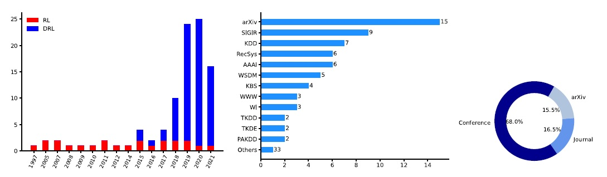

Welcome! I have more than 10 years of experience in programming, software development and research. I received my PhD degree in Software Engineering from University of Calgary. During my PhD studies, I worked on recommender systems, machine learning, NLP, and intelligent agents/chatbots. Prior to joining UofC, I completed my MSc and BSc degrees in Computer Engieering in Iran.
We designed and implemented two prototypes of a chatbot to play the role of a patient decision aid. We used a multi-layered, multi-agent architecture for the design of ALAN, demonstrated in the figure below.
In the first prototype, we developed a web application containing that could communicate with pateints and physicians, understand the language, and provide some services, like fetching the most recent survey filled by the patient or visit summarization. We used SQL Server for the database management. The second prototype consisted of impelentation of ALAN in JADE (a Java platform for multi-agent systems). The architecture of the second prototype is as follow.
We used a simple GUI for the second prototype, depicted below.
ALAN could provide various services for both pateints and practitioners and show the response to the user in the most logical way. For example, a sample of retrieved data by ALAN is as follows.
During my internship at Mila, I worked on an art project offered by National Film Board of Canada. We aimed at developing an interactive web platform that connects people through synthetic laughter. We wanted to explore the phenomenon of empathy triggered by laughter, the relationship between individual memory and laughter, and how the sound of laughter evolves over a lifetime. To this end, we trained GAN models in order to synthesize real, diverse laughter. We trained our model on the spectrograms of our laughter audio dataset. The followings are two spectrogram samples of the data; see how similar they look like.
Also, you may also listen to some samples generated by our models. For more details, please check our paper presented at NIPS, MLCD workshop.
Recommender systems (RSs) have become an inseparable part of our everyday lives. Traditionally, the recommendation problem was considered to be a classification or prediction problem, but it is now widely agreed that formulating it as a sequential decision problem can better reflect the user-system interaction. Therefore, it can be formulated as a Markov decision process (MDP) and be solved by reinforcement learning (RL) algorithms. In this research project, a survey on reinforcement learning based recommender systems (RLRSs) is presented. We propose an RLRS framework with four components, i.e., state representation, policy optimization, reward formulation, and environment building, and survey RLRS algorithms accordingly. This work reviews 97 RLRS algorithms, a summary of which is presented in the following figure.
